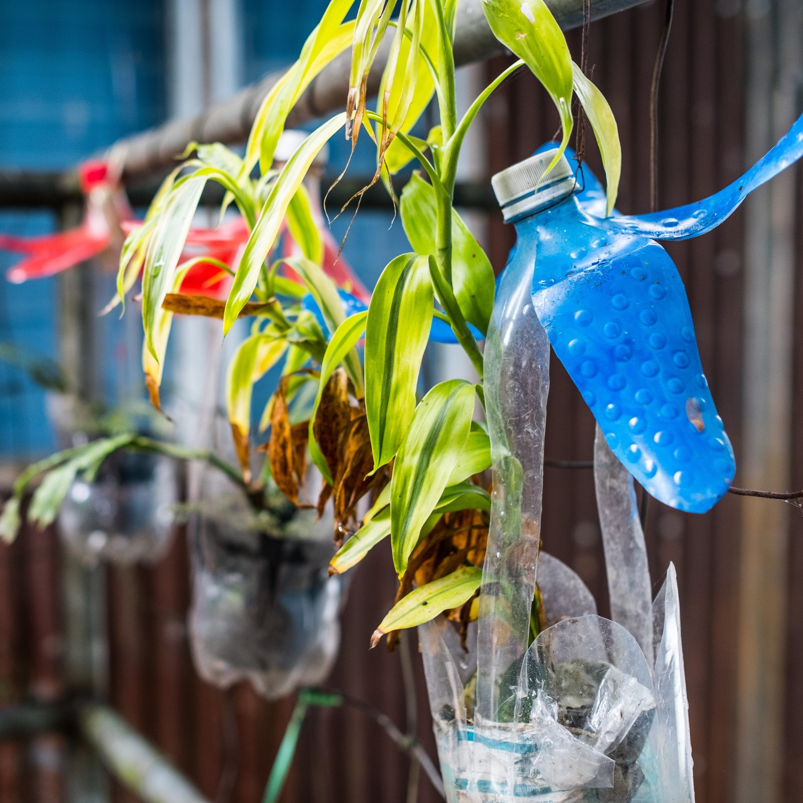
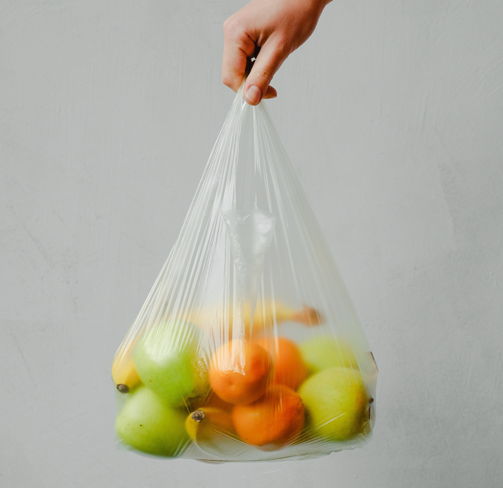

Pros & Cons of On-Campus Sustainbility
Pro #1:
When plastics, glass, or other products are recycled, fewer waste ends up in landfills.
Con #1:
Recycled products, such as biodegradable containers, are not as high quality as plastic or Styrofoam.

Pro #2:
There are plenty of alternative methods to throwing away plastics and glass, such as reusing them for a unique purpose like a planter.
Con #2:
People may not separate their waste correctly, causing trash build-up in recycling bins.

Pro #3:
Teaching sustainability saves money for organizations such as colleges because it will show students how to eliminate food and energy waste.
Con #3:
Sustainability can appear expensive for organizations, which is why some refuse to switch over to recycled products.

Pro #4:
If people understand their impact by recycling, fewer environmental stress will weigh on students.
Con #4:
Some items are not recyclable, continuing the build up on landfills.
Pro #5:
Gen Z, the generation now in college, find sustainability and eco-friendly alternatives appealing when searching for colleges.
Con #5:
Switching to sustainability can be time-consuming for people and organizations.